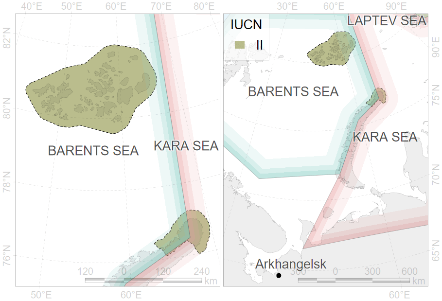
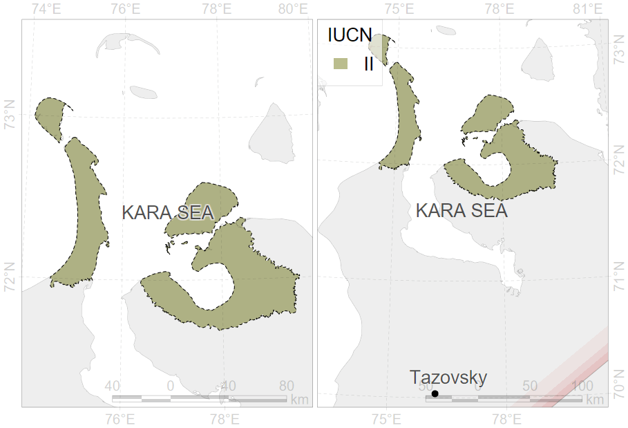
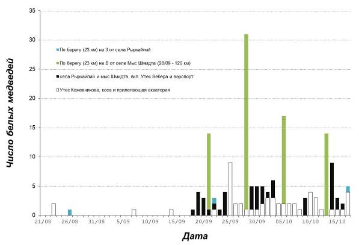

layout: true class: can-here-be-inverse .banner[ .logo.remarkonly[  ] .shorttitle[ [N. Platonov: Russian updates](#home) .white[[](#polarmap)] ] ] --- name: home class: metadata customtitle middle left giphy .sidebar.left-column[ # [Management](#H6c09c) # [Research](#H04d01) # [Other activity ](#H23c13) ] .mainbar.right-column[ .author[.photo.belikov[Belikov S. E.]] .institute[All-Russian Research Institute for Environment Protection] .author[.photo.kochnev[Kochnev A. A.]] .institute[Institute of Biological Problems of the North, Far East Branch, Russian Academy of Sciences] .author[.photo.platonov[Platonov N. G.]] .institute[.photo.sevin[A. N. Severtsov Institute of Ecology and Evolution, Russian Academy of Sciences]] .author[Mordvintsev I. N., Naidenko S. V.] .institute[A. N. Severtsov Institute of Ecology and Evolution, Russian Academy of Sciences] .author[Mizin I. A.] .institute[ "Russian Arctic" National Park] .author[Babiy U. V., Vailyev D. V.] .institute[State Nature Reserve "Wrangel Island"] .author[Chernook V. I.] .institute[Ecofactor] .author[Semenov A. A.] .institute[National Park "Lenskie Stolby"] .author[Krever O. V.] .institute[RoszapovedCenter] .title[Russian Updates] .subtitle[Management and Research on Polar Bears in Russia, 2022–2024] .what[.photo.stirling[20<sup>th</sup> Working Meeting of the IUCN/SSC Polar Bear Specialist Group]] .where[Seattle, WA, USA] .when[.photo.david[2023-06-12] .updated[Обновлено: 2024-06-06 18:53]] ] --- name: polarmap class: znotable .remarkonly[ .backtoshow[ <a href="javascript:window.history.back();">↩</a> ] .generalmap[ <div class="figure"> <div class="framed" style="height:656px; width=100%"> <iframe src="assets/widget_generalmap.html" width="100%" height="656" class="ursa-widgetize"></iframe> </div> </div> ] ] --- name: H6c09c .sidebar.left-column[ # [Management](#H6c09c).fg[] ## [Legislative basis](#H6c09c).fg[].bg[] ### [Federal laws](#H0c125) ### [Regulations](#Hda208) ### [Authority](#ministry) ### [New regulations](#H327d1) ## [Implementation](#ecology) # [Research](#H04d01) # [Other activity ](#H23c13) ] .mainbar.right-column[ Federal laws: + "On Protection of the Environment" (2002) + constituents "Red Data Book of the Russian Federation" + "On Wildlife" (1995) + prohibits any actions that affects adversely on Red Data Book animals The polar bear is listed in the Red Data Book of the Russian Federation (2001). This edition is after 20 years after previous <a name=cite-RedBook2001></a>([Данилов-Данильян, 2001](#bib)). ] --- name: H0c125 .sidebar.left-column[ # [Management](#H6c09c).fg[] ## [Legislative basis](#H6c09c).fg[] ### [Federal laws](#H0c125).fg[].bg[] ### [Regulations](#Hda208) ### [Authority](#ministry) ### [New regulations](#H327d1) ## [Implementation](#ecology) # [Research](#H04d01) # [Other activity ](#H23c13) ] .mainbar.right-column[ + «On Environment Protection» + «On Fauna» + «On Specially Protected Natural Areas (Protected Areas)» + The Criminal Code of the Russian Federation ] --- name: Hda208 .sidebar.left-column[ # [Management](#H6c09c).fg[] ## [Legislative basis](#H6c09c).fg[] ### [Federal laws](#H0c125) ### [Regulations](#Hda208).fg[].bg[] ### [Authority](#ministry) ### [New regulations](#H327d1) ## [Implementation](#ecology) # [Research](#H04d01) # [Other activity ](#H23c13) ] .mainbar.right-column[ + .clarify[ The Basics of State Policy in the field of Environmental Development + approved by the President ] + Strategy for the Development of the Arctic Zone .approved[approved by the President] + Strategy for the Conservation of Rare and Endangered Animals, Plants and Fungi .approved[approved by the Government] + The Red Data Book of rare and endangered animals of the Russian Federation (2021). .approved[approved by the Ministry of Natural Resources and Environment in 2020] ] --- name: ministry .sidebar.left-column[ # [Management](#H6c09c).fg[] ## [Legislative basis](#H6c09c).fg[] ### [Federal laws](#H0c125) ### [Regulations](#Hda208) ### [Authority](#ministry).fg[].bg[] ### [New regulations](#H327d1) ## [Implementation](#ecology) # [Research](#H04d01) # [Other activity ](#H23c13) ] .mainbar.right-column[ + .clarify[ Ministry of Natural Resources and Environment + Development of state policy and legal regulation in the field of study, use, reproduction and protection of natural resources + Federal institutions (FSBIs) for management on 233 federal specially protected natural areas (PAs) + Development of PAs Network + Supervision of [national project «Ecology»](#ecology) ] + .clarify[ Federal Supervisory Natural Resources Management Service + Control and supervision of environmental management + Management of federal PAs out of FSBIs authority ] + .clarify[ Regional authorities + Management of regional PAs ] ] --- name: H327d1 .sidebar.left-column[ # [Management](#H6c09c).fg[] ## [Legislative basis](#H6c09c).fg[] ### [Federal laws](#H0c125) ### [Regulations](#Hda208) ### [Authority](#ministry) ### [New regulations](#H327d1).fg[].bg[] ## [Implementation](#ecology) # [Research](#H04d01) # [Other activity ](#H23c13) ] .mainbar.right-column[ .pulling[ .pull-left-50[ Under the Red Data Book <a name=cite-RedBook2021></a>([{КК РФ}, 2021](#bib)), polar bears in Russia are segregated into three different populations: Kara-Barents Sea population, Laptev Sea population, Alaska-Chukotka population. In <span class="hovertext" data-hover="Ministry of Natural Resources and Environment">Ministry</span> there are significant steps to replace "population" term to "subpopulation" for consistence with IUCN terms. ] .pull-right-50[ <div class="figure" style="text-align: center"> <img src="assets/pb-strategy2010.png" alt="Adopted from Polar Bear Strategy (2010)" width="1330" height="568" class='aspect torussian' /> <p class="caption">Adopted from Polar Bear Strategy (2010)</p> </div> ] ] ] --- name: ecology .sidebar.left-column[ # [Management](#H6c09c).fg[] ## [Legislative basis](#H6c09c) ## [Implementation](#ecology).fg[] ### [<span class="hovertext" data-hover="National project «Ecology»">Project "Ecology"</span>](#ecology).fg[].bg[] #### [Expert Section](#expert) #### [Strategy](#strategy) #### [Roadmap](#roadmap) #### [Action plan](#actionplan) #### [Funding](#Hbf740) ### [Protected areas](#H541ee) ### [Conservation](#Hb8b65) # [Research](#H04d01) # [Other activity ](#H23c13) ] .mainbar.right-column[ Federal project «Conservation of biodiversity and ecotourism development», managed by budgetary institution "Roszapovedcenter" under [Ministry of Natural Resources and Environment](#ministry) Objects: polar bear and 12 other priority species Activity: Working Group divided on [Polar Bear Expert Section](#expert) and 12 other species specific expert sections + "[Roadmaps](#roadmap)" for priority species conservation + Development of conservation [strategies](#strategy) and recovery programs for priority species + "Business and Biodiversity" initiative to involve funding from commercial companies ] --- name: expert .sidebar.left-column[ # [Management](#H6c09c).fg[] ## [Legislative basis](#H6c09c) ## [Implementation](#ecology).fg[] ### [<span class="hovertext" data-hover="National project «Ecology»">Project "Ecology"</span>](#ecology).fg[] #### [Expert Section](#expert).fg[].bg[] #### [Strategy](#strategy) #### [Roadmap](#roadmap) #### [Action plan](#actionplan) #### [Funding](#Hbf740) ### [Protected areas](#H541ee) ### [Conservation](#Hb8b65) # [Research](#H04d01) # [Other activity ](#H23c13) ] .mainbar.right-column[ .header[Polar bear expert section] Twenty two members Regular meetings to discuss the most important issues and prepare documents. Special meetings for decision making in extraordinary cases ] --- name: strategy .sidebar.left-column[ # [Management](#H6c09c).fg[] ## [Legislative basis](#H6c09c) ## [Implementation](#ecology).fg[] ### [<span class="hovertext" data-hover="National project «Ecology»">Project "Ecology"</span>](#ecology).fg[] #### [Expert Section](#expert) #### [Strategy](#strategy).fg[].bg[] #### [Roadmap](#roadmap) #### [Action plan](#actionplan) #### [Funding](#Hbf740) ### [Protected areas](#H541ee) ### [Conservation](#Hb8b65) # [Research](#H04d01) # [Other activity ](#H23c13) ] .mainbar.right-column[ .header[Strategy for polar bear conservation] Approved in 2022 with horizons up to 2030. Approved by order of the Ministry of Natural Resources and Ecology of the Russian Federation on 01 March 2022 No. 7-r. Lorem fermentum fusce duis felis, mauris lacus torquent fames ultricies cum ligula, nascetur suscipit. Orci nulla nisi, tortor sem fringilla in aptent dictum velit tortor sollicitudin. Mus nisi sagittis elementum dui nisi orci curabitur. Euismod nascetur ultrices convallis orci torquent quisque cursus! ] --- name: roadmap .sidebar.left-column[ # [Management](#H6c09c).fg[] ## [Legislative basis](#H6c09c) ## [Implementation](#ecology).fg[] ### [<span class="hovertext" data-hover="National project «Ecology»">Project "Ecology"</span>](#ecology).fg[] #### [Expert Section](#expert) #### [Strategy](#strategy) #### [Roadmap](#roadmap).fg[].bg[] #### [Action plan](#actionplan) #### [Funding](#Hbf740) ### [Protected areas](#H541ee) ### [Conservation](#Hb8b65) # [Research](#H04d01) # [Other activity ](#H23c13) ] .mainbar.right-column[ .header[Road map for polar bear conservation measures] Ipsum facilisis ridiculus imperdiet pulvinar est: mus tempus nisi? Netus turpis cras sagittis tortor aptent – dictumst turpis vivamus. Vulputate semper mollis fames tristique pretium hac magnis dictum. ] --- name: actionplan .sidebar.left-column[ # [Management](#H6c09c).fg[] ## [Legislative basis](#H6c09c) ## [Implementation](#ecology).fg[] ### [<span class="hovertext" data-hover="National project «Ecology»">Project "Ecology"</span>](#ecology).fg[] #### [Expert Section](#expert) #### [Strategy](#strategy) #### [Roadmap](#roadmap) #### [Action plan](#actionplan).fg[].bg[] #### [Funding](#Hbf740) ### [Protected areas](#H541ee) ### [Conservation](#Hb8b65) # [Research](#H04d01) # [Other activity ](#H23c13) ] .mainbar.right-column[ .header[Action Plan on polar bear conservation] Lorem egestas cubilia pulvinar vulputate convallis non class. Fames pharetra metus, porttitor etiam in purus litora ad congue. ] --- name: Hbf740 .sidebar.left-column[ # [Management](#H6c09c).fg[] ## [Legislative basis](#H6c09c) ## [Implementation](#ecology).fg[] ### [<span class="hovertext" data-hover="National project «Ecology»">Project "Ecology"</span>](#ecology).fg[] #### [Expert Section](#expert) #### [Strategy](#strategy) #### [Roadmap](#roadmap) #### [Action plan](#actionplan) #### [Funding](#Hbf740).fg[].bg[] ### [Protected areas](#H541ee) ### [Conservation](#Hb8b65) # [Research](#H04d01) # [Other activity ](#H23c13) ] .mainbar.right-column[ <div class="grViz html-widget html-fill-item" id="htmlwidget-58499c33e8e9a218f5c0" style="width:1330px;height:568px;"></div> <script type="application/json" data-for="htmlwidget-58499c33e8e9a218f5c0">{"x":{"diagram":"digraph {\n\ngraph [layout = dot, rankdir = LR]\n\nnode [fontname = \"Roboto\", shape = rectangle, style = filled, fillcolor = Linen]\n\ngovernment [label = \"Government\n(Budgetary)\", shape = folder, fillcolor = Beige]\ncommercial [label = \"Non-government\n(Extrabudgetary)\", shape = folder, fillcolor = Beige]\n\n# budget [label = \"Budgetary\", shape = folder, fillcolor = Beige]\n# external [label = \"Extrabudgetary\", shape = folder, fillcolor = Beige]\n\nnational [label = \"National\ncompanies\"]\ninternational [label = \"International\ncompanies\", fillcolor = Red]\n\nnature [label = \"Ministry\nof Nature\"]\nscience [label = \"Ministry\nof Science\"]\nauthority [label = \"Authorities\"]\ntourism [label = \"Tourism\"]\nkrever [label = \"Services\", fillcolor = \"#00A000\"]\n\nPA [label = \"Natural\nReserves\"]\nresearches [label = \"Researches\"]\nwwf [label = \"WWF\", fillcolor = Red]\nRFFI [label = \"Scientific Funds\", fillcolor = Red]\nRNF [label = \"Scientific Funds\"]\ninstitute [label = \"Institutes\"]\n\n# budget -> government\ngovernment -> {nature science}\n\n# {nature -> PA}\n\ntourism -> PA\n\nscience -> institute -> researches\n\n# external -> commercial\n\ncommercial -> {national international wwf}\n\nnational -> {PA}\n\nnational -> {krever RNF}\n\nnature -> {krever authority} -> PA\n\nscience -> {RNF}\n\nRNF -> researches\n\n\n}","config":{"engine":"dot","options":null}},"evals":[],"jsHooks":[]}</script> ] --- name: H541ee .sidebar.left-column[ # [Management](#H6c09c).fg[] ## [Legislative basis](#H6c09c) ## [Implementation](#ecology).fg[] ### [<span class="hovertext" data-hover="National project «Ecology»">Project "Ecology"</span>](#ecology) ### [Protected areas](#H541ee).fg[].bg[] ### [Conservation](#Hb8b65) # [Research](#H04d01) # [Other activity ](#H23c13) ] .mainbar.right-column[ <div class="figure" style="text-align: center"> <img src="assets/epa.png" alt="Compiled by Systematic Conservation Consultancy" width="1330" height="568" aspect /> <p class="caption">Compiled by Systematic Conservation Consultancy</p> </div> [](#polarmap) ] --- name: Hb8b65 .sidebar.left-column[ # [Management](#H6c09c).fg[] ## [Legislative basis](#H6c09c) ## [Implementation](#ecology).fg[] ### [<span class="hovertext" data-hover="National project «Ecology»">Project "Ecology"</span>](#ecology) ### [Protected areas](#H541ee) ### [Conservation](#Hb8b65).fg[] #### [State Red Book ](#Hb8b65) <span class="bullet bullet-active">[•](#Hb8b65)</span><span class="bullet mslide21m">[•](#H95a91)</span>.fg[].bg[] #### [Chukotka Red Book ](#H9554b) #### [ArcNet ](#H375e3) # [Research](#H04d01) # [Other activity ](#H23c13) ] .mainbar.right-column[ .header[Red Book of the Russian Federation] <iframe src="https://cicon.ru/beli-medwed.html" width="1330" height="640px" data-external="1"></iframe> ] --- Content: Category and status, distribution, habitat, population size, limited factors, conservation actions, required conservation actions name: H95a91 .sidebar.left-column[ # [Management](#H6c09c).fg[] ## [Legislative basis](#H6c09c) ## [Implementation](#ecology).fg[] ### [<span class="hovertext" data-hover="National project «Ecology»">Project "Ecology"</span>](#ecology) ### [Protected areas](#H541ee) ### [Conservation](#Hb8b65).fg[] #### [State Red Book ](#Hb8b65) <span class="bullet bullet">[•](#Hb8b65)</span><span class="bullet bullet-active">[•](#H95a91)</span>.fg[].bg[] #### [Chukotka Red Book ](#H9554b) #### [ArcNet ](#H375e3) # [Research](#H04d01) # [Other activity ](#H23c13) ] .mainbar.right-column[ ref to \[RedBook2021-pbear\] | Subpopulation | Status (2001) |:---:|:--| | BS/KS | 4 - Uncertain | | LV | 3 - Rare | | CS | 5 - Rehabilitated and Rehabilitating | | Subpopulation | Status | IUCN-ref Red list | IUCN Red List | Priority |:------:|:------|:------|:------|:---------------------| | BS/KS/LV/CS | 3 - Rare | VU A4abd | VU A3c | I - Highest priority for conservation action ] --- name: H9554b .sidebar.left-column[ # [Management](#H6c09c).fg[] ## [Legislative basis](#H6c09c) ## [Implementation](#ecology).fg[] ### [<span class="hovertext" data-hover="National project «Ecology»">Project "Ecology"</span>](#ecology) ### [Protected areas](#H541ee) ### [Conservation](#Hb8b65).fg[] #### [State Red Book ](#Hb8b65) #### [Chukotka Red Book ](#H9554b).fg[].bg[] #### [ArcNet ](#H375e3) # [Research](#H04d01) # [Other activity ](#H23c13) ] .mainbar.right-column[ .header[Red Book of the Chukotka Autonomous Okrug] <img src="assets/ChukotkaRedBook2022.webp" width="1330" height="500" style="display: block; margin: auto;" /> Second Edition <a name=cite-ChukchiRedBook2022-en></a>([Kochnev et al., 2022](#bib)) Status: 5 - Rehabilitated and Rehabilitating. ] --- name: H375e3 .sidebar.left-column[ # [Management](#H6c09c).fg[] ## [Legislative basis](#H6c09c) ## [Implementation](#ecology).fg[] ### [<span class="hovertext" data-hover="National project «Ecology»">Project "Ecology"</span>](#ecology) ### [Protected areas](#H541ee) ### [Conservation](#Hb8b65).fg[] #### [State Red Book ](#Hb8b65) #### [Chukotka Red Book ](#H9554b) #### [ArcNet ](#H375e3).fg[].bg[] # [Research](#H04d01) # [Other activity ](#H23c13) ] .mainbar.right-column[ .pulling[ .pull-left-40[ .font75[ ArcNet is a network design framework to help achieve ocean-scale, area-based marine conservation in the Arctic. The framework is centred around a network of 83 priority areas for conservation (PACs) designed through expert-driven systematic conservation planning using conservation targets for over 800 conservation features (CFs) that represent Arctic biodiversity. These CFs, their targets, and PACs were identified systematically based on their biological and ecological significance; therefore, implementing the ArcNet PACs as a network of protected and conserved areas will strengthen the Arctic Ocean’s biodiversity and help nations deliver on their UN-level commitments to protect 30% of oceans by 2030 <a name=cite-CBD2022></a>([Convention on Biological Diversity, 2022](#bib)). ] ] .pull-right-60[ <img src="https://support.arcticwwf.org/site/assets/files/3407/arcnetwebpage3.png" width="1330" height="568" bound style="display: block; margin: auto;" /> <a name=cite-James2024></a>([James et al., 2024](#bib)) ] ] ] --- name: H04d01 .sidebar.left-column[ # [Management](#H6c09c) # [Research](#H04d01).fg[] ## [Participants](#H04d01).fg[].bg[] ### [Natural reserves](#H58821) ### [Institutes](#kochnev) ### [Non-profit](#boltunov) ## [Results](#H80001) # [Other activity ](#H23c13) ] .mainbar.right-column[ <img src="assets/uicn.png" width="1330" height="568" autoheight style="display: block; margin: auto;" /> [](#polarmap) Scientific research projects on polar bears were conducted by individual scientific institutions and non-governmental organizations. ] --- name: H58821 .sidebar.left-column[ # [Management](#H6c09c) # [Research](#H04d01).fg[] ## [Participants](#H04d01).fg[] ### [Natural reserves](#H58821).fg[].bg[] #### [Russian Arctic ](#rusarc) #### [Wrangel Island ](#wrangel) #### [Bear Islands](#medvezh) #### [Gydansky](#gyda) #### [Taimyr ](#taimyr) #### [Ust-Lensky ](#mira) #### [Beringia ](#bering) ### [Institutes](#kochnev) ### [Non-profit](#boltunov) ## [Results](#H80001) # [Other activity ](#H23c13) ] .mainbar.right-column[ ] --- name: rusarc .sidebar.left-column[ # [Management](#H6c09c) # [Research](#H04d01).fg[] ## [Participants](#H04d01).fg[] ### [Natural reserves](#H58821).fg[] #### [Russian Arctic ](#rusarc).fg[].bg[] #### [Wrangel Island ](#wrangel) #### [Bear Islands](#medvezh) #### [Gydansky](#gyda) #### [Taimyr ](#taimyr) #### [Ust-Lensky ](#mira) #### [Beringia ](#bering) ### [Institutes](#kochnev) ### [Non-profit](#boltunov) ## [Results](#H80001) # [Other activity ](#H23c13) ] .mainbar.right-column[ .header[National park 'Russian Arctic']  .pulling[ .pull-left-70[ + Maternal den [distribution](#maternal-rusarc) ] .pull-right-30[ [](#polarmap) ] ] ] --- name: wrangel .sidebar.left-column[ # [Management](#H6c09c) # [Research](#H04d01).fg[] ## [Participants](#H04d01).fg[] ### [Natural reserves](#H58821).fg[] #### [Russian Arctic ](#rusarc) #### [Wrangel Island ](#wrangel).fg[].bg[] #### [Bear Islands](#medvezh) #### [Gydansky](#gyda) #### [Taimyr ](#taimyr) #### [Ust-Lensky ](#mira) #### [Beringia ](#bering) ### [Institutes](#kochnev) ### [Non-profit](#boltunov) ## [Results](#H80001) # [Other activity ](#H23c13) ] .mainbar.right-column[ .header[State reserve [Wrangel Island](http://eng.ostrovwrangelya.org/)] <img src="assets/epa-wrangel.png" width="1330" height="500" bound style="display: block; margin: auto;" /> .pulling[ .pull-left-70[ + Supported by .krever[RosZapovedCenter] in 2022 + Maternal den [distribution](#maternal-wrangel), ground and aerial surveys ] .pull-right-30[ [](#polarmap) ] ] ] --- name: medvezh .sidebar.left-column[ # [Management](#H6c09c) # [Research](#H04d01).fg[] ## [Participants](#H04d01).fg[] ### [Natural reserves](#H58821).fg[] #### [Russian Arctic ](#rusarc) #### [Wrangel Island ](#wrangel) #### [Bear Islands](#medvezh).fg[].bg[] #### [Gydansky](#gyda) #### [Taimyr ](#taimyr) #### [Ust-Lensky ](#mira) #### [Beringia ](#bering) ### [Institutes](#kochnev) ### [Non-profit](#boltunov) ## [Results](#H80001) # [Other activity ](#H23c13) ] .mainbar.right-column[ .header[State reserve 'Medvezhie Ovstrova'] <img src="assets/epa-medvezh.png" width="1330" height="500" bound style="display: block; margin: auto;" /> [](#polarmap) Operated by State Reserve 'Lenskie Pillars'. Supported by .krever[RosZapovedCenter] in 2023. [Maternal den](#maternal-medvezh) survey, [captures](#capture-medvezh), ground and [aerial](#aerial-medvezh) surveys. ] --- name: gyda .sidebar.left-column[ # [Management](#H6c09c) # [Research](#H04d01).fg[] ## [Participants](#H04d01).fg[] ### [Natural reserves](#H58821).fg[] #### [Russian Arctic ](#rusarc) #### [Wrangel Island ](#wrangel) #### [Bear Islands](#medvezh) #### [Gydansky](#gyda).fg[].bg[] #### [Taimyr ](#taimyr) #### [Ust-Lensky ](#mira) #### [Beringia ](#bering) ### [Institutes](#kochnev) ### [Non-profit](#boltunov) ## [Results](#H80001) # [Other activity ](#H23c13) ] .mainbar.right-column[ .header[National park 'Gydansky']  .pulling[ .pull-left-70[ Expected supporting of .krever[RoszapovedCanter] in 2024. Polar bear [occurrence](#occurrence-yamal). ] .pull-right-30[ [](#polarmap) ] ] ] --- name: taimyr .sidebar.left-column[ # [Management](#H6c09c) # [Research](#H04d01).fg[] ## [Participants](#H04d01).fg[] ### [Natural reserves](#H58821).fg[] #### [Russian Arctic ](#rusarc) #### [Wrangel Island ](#wrangel) #### [Bear Islands](#medvezh) #### [Gydansky](#gyda) #### [Taimyr ](#taimyr).fg[].bg[] #### [Ust-Lensky ](#mira) #### [Beringia ](#bering) ### [Institutes](#kochnev) ### [Non-profit](#boltunov) ## [Results](#H80001) # [Other activity ](#H23c13) ] .mainbar.right-column[ .header[State reserve 'Zapovedniki Taimyra'] <img src="assets/epa-taimyr.png" width="1330" height="500" bound style="display: block; margin: auto;" /> .pulling[ .pull-left-70[ Planning survey in 2024 ] .pull-right-30[ [](#polarmap) ] ] ] --- name: mira .sidebar.left-column[ # [Management](#H6c09c) # [Research](#H04d01).fg[] ## [Participants](#H04d01).fg[] ### [Natural reserves](#H58821).fg[] #### [Russian Arctic ](#rusarc) #### [Wrangel Island ](#wrangel) #### [Bear Islands](#medvezh) #### [Gydansky](#gyda) #### [Taimyr ](#taimyr) #### [Ust-Lensky ](#mira).fg[].bg[] #### [Beringia ](#bering) ### [Institutes](#kochnev) ### [Non-profit](#boltunov) ## [Results](#H80001) # [Other activity ](#H23c13) ] .mainbar.right-column[ .header[State reserve 'Ust-Lensky' and natural refuge 'New Siberian islands'] <img src="assets/epa-mira.png" width="1330" height="500" bound style="display: block; margin: auto;" /> .pulling[ .pull-left-70[ [Aerial survey 2021](#aerial-laptev) "Master of the Arctic" Polar bear researches are scarce and systematic <a name=cite-Gladysheva2022></a>([Гладышева, 2022](#bib)). Polar bear [occurrence](#occurrence-laptev). Planning surveys in 2025 ] .pull-right-30[ [](#polarmap) ] ] ] --- name: bering .sidebar.left-column[ # [Management](#H6c09c) # [Research](#H04d01).fg[] ## [Participants](#H04d01).fg[] ### [Natural reserves](#H58821).fg[] #### [Russian Arctic ](#rusarc) #### [Wrangel Island ](#wrangel) #### [Bear Islands](#medvezh) #### [Gydansky](#gyda) #### [Taimyr ](#taimyr) #### [Ust-Lensky ](#mira) #### [Beringia ](#bering).fg[].bg[] ### [Institutes](#kochnev) ### [Non-profit](#boltunov) ## [Results](#H80001) # [Other activity ](#H23c13) ] .mainbar.right-column[ .header[National park 'Beringia'] <img src="assets/epa-bering.png" width="1330" height="500" bound style="display: block; margin: auto;" /> .pulling[ .pull-left-70[ Polar bear [distribution](#occurrence-chukotka), [behaviour](#schmidt), [safety](#safety). ] .pull-right-30[ [](#polarmap) ] ] ] --- name: kochnev .sidebar.left-column[ # [Management](#H6c09c) # [Research](#H04d01).fg[] ## [Participants](#H04d01).fg[] ### [Natural reserves](#H58821) ### [Institutes](#kochnev).fg[] #### [Biological Problems of the North ](#kochnev).fg[].bg[] #### [VNII Ecology ](#Hd7b67) #### [Severtsov Institute ](#sevin) ### [Non-profit](#boltunov) ## [Results](#H80001) # [Other activity ](#H23c13) ] .mainbar.right-column[ .header[Institute of Biological Problems of the North, Far East Branch, Russian Academy of Sciences] Polar bear [distribution](#occurrence-chukotka), [behaviour](#schmidt), [safety](#safety). ] --- name: Hd7b67 .sidebar.left-column[ # [Management](#H6c09c) # [Research](#H04d01).fg[] ## [Participants](#H04d01).fg[] ### [Natural reserves](#H58821) ### [Institutes](#kochnev).fg[] #### [Biological Problems of the North ](#kochnev) #### [VNII Ecology ](#Hd7b67).fg[].bg[] #### [Severtsov Institute ](#sevin) ### [Non-profit](#boltunov) ## [Results](#H80001) # [Other activity ](#H23c13) ] .mainbar.right-column[ .header[[All-Russian Research Institute of Environmental Protection](http://vniiecology.ru)] Adipiscing netus etiam erat nec integer aliquam nam magna hendrerit mattis nam euismod? Porta dictum vehicula eu gravida malesuada neque non blandit proin elementum! Venenatis mollis nam tristique varius fusce – ornare sollicitudin faucibus convallis. Rhoncus cras felis neque suscipit natoque aenean. ] --- name: sevin .sidebar.left-column[ # [Management](#H6c09c) # [Research](#H04d01).fg[] ## [Participants](#H04d01).fg[] ### [Natural reserves](#H58821) ### [Institutes](#kochnev).fg[] #### [Biological Problems of the North ](#kochnev) #### [VNII Ecology ](#Hd7b67) #### [Severtsov Institute ](#sevin).fg[].bg[] ### [Non-profit](#boltunov) ## [Results](#H80001) # [Other activity ](#H23c13) ] .mainbar.right-column[ .header[A. N. Severtsov Instutute of Ecology and Evolution of the Russian Academy of Science] The program for polar bear researches in the Russian Arctic .clarify[ Principal team: + Ilia Mordvintsev - expeditional leader, polar bear ecology + Evgeny Ivanov – immobilizer, biologist + Nikita Platonov - data analysis ] .clarify[ Involved specialists: + Pavel Sorokin - genetics + Maxim Vechersky - microbiology + Sergei Naidenko - predator's reproductivity, deceases + Vyatcheslav Rozhnov - coordination, mentor ] Aerial survey in the Laptev Sea ([2021](#aerial-laptev)), [seropositivity](#seropositivity), captures in [2022](#capture-medvezh) and [2023](#capture-yamal), [microbiology](#microbiology-feces). ] --- name: boltunov .sidebar.left-column[ # [Management](#H6c09c) # [Research](#H04d01).fg[] ## [Participants](#H04d01).fg[] ### [Natural reserves](#H58821) ### [Institutes](#kochnev) ### [Non-profit](#boltunov).fg[] #### [Marine mammals ](#boltunov).fg[].bg[] #### [EcoFactor ](#chernook) ## [Results](#H80001) # [Other activity ](#H23c13) ] .mainbar.right-column[ .header[Expeditional center [Marine mammals](https://www.mmrec.ru)] Dolor ridiculus ridiculus lacus fringilla. Gravida a, tempus quam dui interdum auctor. Curae phasellus hac, leo etiam ante consequat congue varius et sapien eget? Luctus nibh varius maecenas: sed parturient scelerisque. <img src="https://www.mmrec.ru/source/images/Cards/Expeditions.jpg" width="1330" height="568" style="display: block; margin: auto;" /> ] --- name: chernook .sidebar.left-column[ # [Management](#H6c09c) # [Research](#H04d01).fg[] ## [Participants](#H04d01).fg[] ### [Natural reserves](#H58821) ### [Institutes](#kochnev) ### [Non-profit](#boltunov).fg[] #### [Marine mammals ](#boltunov) #### [EcoFactor ](#chernook).fg[].bg[] ## [Results](#H80001) # [Other activity ](#H23c13) ] .mainbar.right-column[ .header[Autonomous non-profit organization [EcoFactor](https://ecofactor.pro/)] Elit ullamcorper luctus praesent dapibus tempus aptent rhoncus egestas. Lobortis commodo mus, enim pulvinar aenean vitae mi rutrum non ante. Sollicitudin lobortis luctus cursus class dignissim cursus. ] --- class: middle center name: H80001 .sidebar.left-column[ # [Management](#H6c09c) # [Research](#H04d01).fg[] ## [Participants](#H04d01) ## [Results](#H80001).fg[].bg[] ### [<span class="hovertext" data-hover="Polar bear occurence">Occurrence</span>](#occurrence-chukotka) ### [Maternal dens](#maternal-wrangel) ### [Aerial surveys](#aerial-laptev) ### [Behaviour](#schmidt) ### [Seropositivity](#seropositivity) ### [Microbiology](#microbiology-feces) ### [Population structure](#H3f4c4) ### [Captures](#capture) ### [Safety](#safety) # [Other activity ](#H23c13) ] .mainbar.right-column[ ## Results ] --- name: occurrence-chukotka .sidebar.left-column[ # [Management](#H6c09c) # [Research](#H04d01).fg[] ## [Participants](#H04d01) ## [Results](#H80001).fg[] ### [<span class="hovertext" data-hover="Polar bear occurence">Occurrence</span>](#occurrence-chukotka).fg[] #### [Chukotka](#occurrence-chukotka).fg[].bg[] #### [Yamal](#occurrence-yamal) #### [Laptev Sea](#occurrence-laptev) #### [Yakutia](#occurrence-medvezh) ### [Maternal dens](#maternal-wrangel) ### [Aerial surveys](#aerial-laptev) ### [Behaviour](#schmidt) ### [Seropositivity](#seropositivity) ### [Microbiology](#microbiology-feces) ### [Population structure](#H3f4c4) ### [Captures](#capture) ### [Safety](#safety) # [Other activity ](#H23c13) ] .mainbar.right-column[ .clarify[ Provided by [Institute of biological problems of the North](#kochnev) and National Park [Beringia](#bering). [](#polarmap): + Database of polar bear occurrence and their footsteps. + Polar bear occurrence depends from sea ice conditions and food availability + No obvious marks for tendency of change. ] ] --- name: occurrence-yamal .sidebar.left-column[ # [Management](#H6c09c) # [Research](#H04d01).fg[] ## [Participants](#H04d01) ## [Results](#H80001).fg[] ### [<span class="hovertext" data-hover="Polar bear occurence">Occurrence</span>](#occurrence-chukotka).fg[] #### [Chukotka](#occurrence-chukotka) #### [Yamal](#occurrence-yamal).fg[].bg[] #### [Laptev Sea](#occurrence-laptev) #### [Yakutia](#occurrence-medvezh) ### [Maternal dens](#maternal-wrangel) ### [Aerial surveys](#aerial-laptev) ### [Behaviour](#schmidt) ### [Seropositivity](#seropositivity) ### [Microbiology](#microbiology-feces) ### [Population structure](#H3f4c4) ### [Captures](#capture) ### [Safety](#safety) # [Other activity ](#H23c13) ] .mainbar.right-column[ Provided by national park [Gydansky](#gyda). <div class="figure" style="text-align: center"> <img src="assets/gydansky-occurrence.png" alt="Polar bear coastal registration during ice free period" width="1330" height="570" bound /> <p class="caption">Polar bear coastal registration during ice free period</p> </div> ] --- name: occurrence-laptev .sidebar.left-column[ # [Management](#H6c09c) # [Research](#H04d01).fg[] ## [Participants](#H04d01) ## [Results](#H80001).fg[] ### [<span class="hovertext" data-hover="Polar bear occurence">Occurrence</span>](#occurrence-chukotka).fg[] #### [Chukotka](#occurrence-chukotka) #### [Yamal](#occurrence-yamal) #### [Laptev Sea](#occurrence-laptev).fg[].bg[] #### [Yakutia](#occurrence-medvezh) ### [Maternal dens](#maternal-wrangel) ### [Aerial surveys](#aerial-laptev) ### [Behaviour](#schmidt) ### [Seropositivity](#seropositivity) ### [Microbiology](#microbiology-feces) ### [Population structure](#H3f4c4) ### [Captures](#capture) ### [Safety](#safety) # [Other activity ](#H23c13) ] .mainbar.right-column[ <img src="assets/gladysheva2023.png" width="1330" height="568" style="display: block; margin: auto;" /> Details in <a name=cite-Gladysheva2023></a>([Gladysheva, 2023](#bib)). ] --- name: occurrence-medvezh .sidebar.left-column[ # [Management](#H6c09c) # [Research](#H04d01).fg[] ## [Participants](#H04d01) ## [Results](#H80001).fg[] ### [<span class="hovertext" data-hover="Polar bear occurence">Occurrence</span>](#occurrence-chukotka).fg[] #### [Chukotka](#occurrence-chukotka) #### [Yamal](#occurrence-yamal) #### [Laptev Sea](#occurrence-laptev) #### [Yakutia](#occurrence-medvezh) <span class="bullet bullet-active">[•](#occurrence-medvezh)</span><span class="bullet mslide49m">[•](#Hcd283)</span>.fg[].bg[] ### [Maternal dens](#maternal-wrangel) ### [Aerial surveys](#aerial-laptev) ### [Behaviour](#schmidt) ### [Seropositivity](#seropositivity) ### [Microbiology](#microbiology-feces) ### [Population structure](#H3f4c4) ### [Captures](#capture) ### [Safety](#safety) # [Other activity ](#H23c13) ] .mainbar.right-column[ ##### Medvezhie Islands Provided by State reserve [Lensky Pillars](#medvezh) in summer 2022. Total 6 polar bears with good body conditions: 1F+1C, 2F, 2M. ] --- name: Hcd283 .sidebar.left-column[ # [Management](#H6c09c) # [Research](#H04d01).fg[] ## [Participants](#H04d01) ## [Results](#H80001).fg[] ### [<span class="hovertext" data-hover="Polar bear occurence">Occurrence</span>](#occurrence-chukotka).fg[] #### [Chukotka](#occurrence-chukotka) #### [Yamal](#occurrence-yamal) #### [Laptev Sea](#occurrence-laptev) #### [Yakutia](#occurrence-medvezh) <span class="bullet bullet">[•](#occurrence-medvezh)</span><span class="bullet bullet-active">[•](#Hcd283)</span>.fg[].bg[] ### [Maternal dens](#maternal-wrangel) ### [Aerial surveys](#aerial-laptev) ### [Behaviour](#schmidt) ### [Seropositivity](#seropositivity) ### [Microbiology](#microbiology-feces) ### [Population structure](#H3f4c4) ### [Captures](#capture) ### [Safety](#safety) # [Other activity ](#H23c13) ] .mainbar.right-column[ ##### Inland entries <img src="assets/inland-yakutia.png" width="1330" height="568" style="display: block; margin: auto;" /> ] --- name: maternal-wrangel .sidebar.left-column[ # [Management](#H6c09c) # [Research](#H04d01).fg[] ## [Participants](#H04d01) ## [Results](#H80001).fg[] ### [<span class="hovertext" data-hover="Polar bear occurence">Occurrence</span>](#occurrence-chukotka) ### [Maternal dens](#maternal-wrangel).fg[] #### [Wrangel Island](#maternal-wrangel).fg[].bg[] #### [Medvezhie Islands](#maternal-medvezh) #### [Franz Josef Land](#maternal-rusarc) ### [Aerial surveys](#aerial-laptev) ### [Behaviour](#schmidt) ### [Seropositivity](#seropositivity) ### [Microbiology](#microbiology-feces) ### [Population structure](#H3f4c4) ### [Captures](#capture) ### [Safety](#safety) # [Other activity ](#H23c13) ] .mainbar.right-column[ Provided by State reserve [Wrangel Island](#wrangel). ] --- name: maternal-medvezh .sidebar.left-column[ # [Management](#H6c09c) # [Research](#H04d01).fg[] ## [Participants](#H04d01) ## [Results](#H80001).fg[] ### [<span class="hovertext" data-hover="Polar bear occurence">Occurrence</span>](#occurrence-chukotka) ### [Maternal dens](#maternal-wrangel).fg[] #### [Wrangel Island](#maternal-wrangel) #### [Medvezhie Islands](#maternal-medvezh).fg[].bg[] #### [Franz Josef Land](#maternal-rusarc) ### [Aerial surveys](#aerial-laptev) ### [Behaviour](#schmidt) ### [Seropositivity](#seropositivity) ### [Microbiology](#microbiology-feces) ### [Population structure](#H3f4c4) ### [Captures](#capture) ### [Safety](#safety) # [Other activity ](#H23c13) ] .mainbar.right-column[ Provided by State reserve [Lensky Pillars](#medvezh). Surveys in 2021, 2022, 2023. <div class="figure"> <div class="framed" style="height:448px; width=100%"> <iframe src="assets/widget_medvezh.html" width="100%" height="448" class="ursa-widgetize"></iframe> </div> </div> |Year |Dens |With females|Families |Loners |Adults | COYs | |:----:|:---:|:----------:|:-------:|:-----:|:-----:|:----:| | 2022 | 20 | unk | 6 | 15 | 20 | 24 | | 2023 | 26 | 13 | 5 | 17 | 24 | 41 | ] --- name: maternal-rusarc .sidebar.left-column[ # [Management](#H6c09c) # [Research](#H04d01).fg[] ## [Participants](#H04d01) ## [Results](#H80001).fg[] ### [<span class="hovertext" data-hover="Polar bear occurence">Occurrence</span>](#occurrence-chukotka) ### [Maternal dens](#maternal-wrangel).fg[] #### [Wrangel Island](#maternal-wrangel) #### [Medvezhie Islands](#maternal-medvezh) #### [Franz Josef Land](#maternal-rusarc).fg[].bg[] ### [Aerial surveys](#aerial-laptev) ### [Behaviour](#schmidt) ### [Seropositivity](#seropositivity) ### [Microbiology](#microbiology-feces) ### [Population structure](#H3f4c4) ### [Captures](#capture) ### [Safety](#safety) # [Other activity ](#H23c13) ] .mainbar.right-column[ Provided by National Park [Russian Arctic](#rusarc). ] --- name: aerial-laptev .sidebar.left-column[ # [Management](#H6c09c) # [Research](#H04d01).fg[] ## [Participants](#H04d01) ## [Results](#H80001).fg[] ### [<span class="hovertext" data-hover="Polar bear occurence">Occurrence</span>](#occurrence-chukotka) ### [Maternal dens](#maternal-wrangel) ### [Aerial surveys](#aerial-laptev).fg[] #### [Laptev Sea 2021](#aerial-laptev).fg[].bg[] #### [<span class="hovertext" data-hover="Wrangel Island 2022">Wrangel 2022</span>](#aerial-wrangel) #### [<span class="hovertext" data-hover="Medvezhie Islands 2022">Medvezhie 2022</span>](#aerial-medvezh2022) #### [<span class="hovertext" data-hover="Medvezhie Islandss 2023">Medvezhie 2023</span>](#aerial-medvezh2023) ### [Behaviour](#schmidt) ### [Seropositivity](#seropositivity) ### [Microbiology](#microbiology-feces) ### [Population structure](#H3f4c4) ### [Captures](#capture) ### [Safety](#safety) # [Other activity ](#H23c13) ] .mainbar.right-column[ Provided by [Severtsov Institute](#sevin) and National park [Ust-Lensky](#mira) in May 2021 ] --- name: aerial-wrangel .sidebar.left-column[ # [Management](#H6c09c) # [Research](#H04d01).fg[] ## [Participants](#H04d01) ## [Results](#H80001).fg[] ### [<span class="hovertext" data-hover="Polar bear occurence">Occurrence</span>](#occurrence-chukotka) ### [Maternal dens](#maternal-wrangel) ### [Aerial surveys](#aerial-laptev).fg[] #### [Laptev Sea 2021](#aerial-laptev) #### [<span class="hovertext" data-hover="Wrangel Island 2022">Wrangel 2022</span>](#aerial-wrangel).fg[].bg[] #### [<span class="hovertext" data-hover="Medvezhie Islands 2022">Medvezhie 2022</span>](#aerial-medvezh2022) #### [<span class="hovertext" data-hover="Medvezhie Islandss 2023">Medvezhie 2023</span>](#aerial-medvezh2023) ### [Behaviour](#schmidt) ### [Seropositivity](#seropositivity) ### [Microbiology](#microbiology-feces) ### [Population structure](#H3f4c4) ### [Captures](#capture) ### [Safety](#safety) # [Other activity ](#H23c13) ] .mainbar.right-column[ Provided by [EcoFactor](#ecofactor) and National park [Wrangel Island](#wrangel) in September 2022. ] --- name: aerial-medvezh2022 .sidebar.left-column[ # [Management](#H6c09c) # [Research](#H04d01).fg[] ## [Participants](#H04d01) ## [Results](#H80001).fg[] ### [<span class="hovertext" data-hover="Polar bear occurence">Occurrence</span>](#occurrence-chukotka) ### [Maternal dens](#maternal-wrangel) ### [Aerial surveys](#aerial-laptev).fg[] #### [Laptev Sea 2021](#aerial-laptev) #### [<span class="hovertext" data-hover="Wrangel Island 2022">Wrangel 2022</span>](#aerial-wrangel) #### [<span class="hovertext" data-hover="Medvezhie Islands 2022">Medvezhie 2022</span>](#aerial-medvezh2022).fg[].bg[] #### [<span class="hovertext" data-hover="Medvezhie Islandss 2023">Medvezhie 2023</span>](#aerial-medvezh2023) ### [Behaviour](#schmidt) ### [Seropositivity](#seropositivity) ### [Microbiology](#microbiology-feces) ### [Population structure](#H3f4c4) ### [Captures](#capture) ### [Safety](#safety) # [Other activity ](#H23c13) ] .mainbar.right-column[ Provided by National park [Lenskie Pillars](#medvezh) and [Severtsov Institute](#sevin) in early October 2022. <img src="assets/survey-medvezh2022.png" width="1330" height="545" bound style="display: block; margin: auto;" /> Total: 66 <!-- 66 ilia, 64 nikita --> polar bears in coastal zone. ] --- name: aerial-medvezh2023 .sidebar.left-column[ # [Management](#H6c09c) # [Research](#H04d01).fg[] ## [Participants](#H04d01) ## [Results](#H80001).fg[] ### [<span class="hovertext" data-hover="Polar bear occurence">Occurrence</span>](#occurrence-chukotka) ### [Maternal dens](#maternal-wrangel) ### [Aerial surveys](#aerial-laptev).fg[] #### [Laptev Sea 2021](#aerial-laptev) #### [<span class="hovertext" data-hover="Wrangel Island 2022">Wrangel 2022</span>](#aerial-wrangel) #### [<span class="hovertext" data-hover="Medvezhie Islands 2022">Medvezhie 2022</span>](#aerial-medvezh2022) #### [<span class="hovertext" data-hover="Medvezhie Islandss 2023">Medvezhie 2023</span>](#aerial-medvezh2023).fg[].bg[] ### [Behaviour](#schmidt) ### [Seropositivity](#seropositivity) ### [Microbiology](#microbiology-feces) ### [Population structure](#H3f4c4) ### [Captures](#capture) ### [Safety](#safety) # [Other activity ](#H23c13) ] .mainbar.right-column[ Provided by [EcoFactor](#ecofactor) and National park [Lenskie Pillars](#medvezh) in September 2022. ] --- name: schmidt .sidebar.left-column[ # [Management](#H6c09c) # [Research](#H04d01).fg[] ## [Participants](#H04d01) ## [Results](#H80001).fg[] ### [<span class="hovertext" data-hover="Polar bear occurence">Occurrence</span>](#occurrence-chukotka) ### [Maternal dens](#maternal-wrangel) ### [Aerial surveys](#aerial-laptev) ### [Behaviour](#schmidt).fg[] #### [Cape Schmidt](#schmidt) <span class="bullet bullet-active">[•](#schmidt)</span><span class="bullet mslide61m">[•](#Hf1c5d)</span><span class="bullet mslide62m">[•](#H68cc8)</span><span class="bullet mslide63m">[•](#H1fcbb)</span>.fg[].bg[] ### [Seropositivity](#seropositivity) ### [Microbiology](#microbiology-feces) ### [Population structure](#H3f4c4) ### [Captures](#capture) ### [Safety](#safety) # [Other activity ](#H23c13) ] .mainbar.right-column[ Provided by [Institute of biological problems of the North](#kochnev) and National Park [Beringia](#bering). [](#polarmap) <div class="figure"> <div class="framed" style="height:568px; width=100%"> <iframe src="assets/widget_schmidt.html" width="100%" height="568" class="ursa-widgetize"></iframe> </div> </div> ] --- name: Hf1c5d .sidebar.left-column[ # [Management](#H6c09c) # [Research](#H04d01).fg[] ## [Participants](#H04d01) ## [Results](#H80001).fg[] ### [<span class="hovertext" data-hover="Polar bear occurence">Occurrence</span>](#occurrence-chukotka) ### [Maternal dens](#maternal-wrangel) ### [Aerial surveys](#aerial-laptev) ### [Behaviour](#schmidt).fg[] #### [Cape Schmidt](#schmidt) <span class="bullet bullet">[•](#schmidt)</span><span class="bullet bullet-active">[•](#Hf1c5d)</span><span class="bullet mslide62m">[•](#H68cc8)</span><span class="bullet mslide63m">[•](#H1fcbb)</span>.fg[].bg[] ### [Seropositivity](#seropositivity) ### [Microbiology](#microbiology-feces) ### [Population structure](#H3f4c4) ### [Captures](#capture) ### [Safety](#safety) # [Other activity ](#H23c13) ] .mainbar.right-column[ <div class="figure" style="text-align: center">  <p class="caption">Abundance dynamics of polar bears at Cape Schmidt, fall 2023</p> </div> ] --- name: H68cc8 .sidebar.left-column[ # [Management](#H6c09c) # [Research](#H04d01).fg[] ## [Participants](#H04d01) ## [Results](#H80001).fg[] ### [<span class="hovertext" data-hover="Polar bear occurence">Occurrence</span>](#occurrence-chukotka) ### [Maternal dens](#maternal-wrangel) ### [Aerial surveys](#aerial-laptev) ### [Behaviour](#schmidt).fg[] #### [Cape Schmidt](#schmidt) <span class="bullet bullet">[•](#schmidt)</span><span class="bullet bullet">[•](#Hf1c5d)</span><span class="bullet bullet-active">[•](#H68cc8)</span><span class="bullet mslide63m">[•](#H1fcbb)</span>.fg[].bg[] ### [Seropositivity](#seropositivity) ### [Microbiology](#microbiology-feces) ### [Population structure](#H3f4c4) ### [Captures](#capture) ### [Safety](#safety) # [Other activity ](#H23c13) ] .mainbar.right-column[ <div class="figure" style="text-align: center"> <img src="assets/cape-schmidt-yearly.png" alt="Comparative size of polar bear aggregations at Cape Schmidt in August-October before the sea freezing" width="1330" height="568" autoheight /> <p class="caption">Comparative size of polar bear aggregations at Cape Schmidt in August-October before the sea freezing</p> </div> ] --- name: H1fcbb .sidebar.left-column[ # [Management](#H6c09c) # [Research](#H04d01).fg[] ## [Participants](#H04d01) ## [Results](#H80001).fg[] ### [<span class="hovertext" data-hover="Polar bear occurence">Occurrence</span>](#occurrence-chukotka) ### [Maternal dens](#maternal-wrangel) ### [Aerial surveys](#aerial-laptev) ### [Behaviour](#schmidt).fg[] #### [Cape Schmidt](#schmidt) <span class="bullet bullet">[•](#schmidt)</span><span class="bullet bullet">[•](#Hf1c5d)</span><span class="bullet bullet">[•](#H68cc8)</span><span class="bullet bullet-active">[•](#H1fcbb)</span>.fg[].bg[] ### [Seropositivity](#seropositivity) ### [Microbiology](#microbiology-feces) ### [Population structure](#H3f4c4) ### [Captures](#capture) ### [Safety](#safety) # [Other activity ](#H23c13) ] .mainbar.right-column[ Polar bears continue to actively use terrestrial habitats on the capes and islands of the coastal part of the Chukchi Sea in the summer-autumn period Even after a three-year absence of walruses, polar bears continue to visit Cape Schmidt and its environs, although they have ceased to form stable long-term groups Despite the dispersed distribution along the coast, polar bear visits to populated areas have become more frequent The villages of Ryrkaypiy and Cape Schmidt retain the status of a “hot spot” in the relationship between people and predators, which must be taken into account during the implementation and when planning the development of any economic activity ] --- name: seropositivity .sidebar.left-column[ # [Management](#H6c09c) # [Research](#H04d01).fg[] ## [Participants](#H04d01) ## [Results](#H80001).fg[] ### [<span class="hovertext" data-hover="Polar bear occurence">Occurrence</span>](#occurrence-chukotka) ### [Maternal dens](#maternal-wrangel) ### [Aerial surveys](#aerial-laptev) ### [Behaviour](#schmidt) ### [Seropositivity](#seropositivity).fg[].bg[] ### [Microbiology](#microbiology-feces) ### [Population structure](#H3f4c4) ### [Captures](#capture) ### [Safety](#safety) # [Other activity ](#H23c13) ] .mainbar.right-column[ Provided by [Severtsov Institute](#sevin) .pulling[ .pull-left-50[ Pathogens: + Canine distemper virus + Herpes simplex virus + Parvovirus + Toxoplasma + Trichinella (*Trichinella sp.*) + Mycoplasma (*Mycoplasma sp.*) + Candida (*Candida sp.*) + Chlamydia (*Chlamydia sp.*) ] .pull-right-50[ <img src="assets/naidenko-map.png" width="1330" height="568" aspect style="display: block; margin: auto;" /> ] ] Seropositive animals have been identified for Canine distemper virus and Trichinella. The proportion of seropositive animals to Trichinella was the maximal. Over the last 10 years, an increased share of animals seropositive to Trichinella and Canine distemper virus has been noted in the Barents Sea area <a name=cite-Naidenko2023_en></a>([Naidenko et al., 2023](#bib)). ] --- name: microbiology-feces .sidebar.left-column[ # [Management](#H6c09c) # [Research](#H04d01).fg[] ## [Participants](#H04d01) ## [Results](#H80001).fg[] ### [<span class="hovertext" data-hover="Polar bear occurence">Occurrence</span>](#occurrence-chukotka) ### [Maternal dens](#maternal-wrangel) ### [Aerial surveys](#aerial-laptev) ### [Behaviour](#schmidt) ### [Seropositivity](#seropositivity) ### [Microbiology](#microbiology-feces).fg[] #### [Feces](#microbiology-feces) <span class="bullet bullet-active">[•](#microbiology-feces)</span><span class="bullet mslide67m">[•](#name: microbiology-feces-2)</span>.fg[].bg[] #### [Mucous](#microbiology-mucous) ### [Population structure](#H3f4c4) ### [Captures](#capture) ### [Safety](#safety) # [Other activity ](#H23c13) ] .mainbar.right-column[ .header[Bacterial and fungal Communities] .pulling[ .pull-left-60[ <img src="assets/feces-map.png" width="1330" height="500" bound style="display: block; margin: auto;" /> Details in <a name=cite-Vechersky2023></a>([Vecherskii et al., 2023](#bib)) ] .pull-right-40[ Provided by [Severtsov Institute](#sevin) The hypothesis that intestinal microbiome and metabolism may change as a result of the bears using new food items that are not typical for them due to climate change and an increase in the ice-free period in the Arctic, which is why they more often remain on the shore and visit human-populated areas. ] ] ] --- name: microbiology-feces-2 .sidebar.left-column[ # [Management](#H6c09c) # [Research](#H04d01).fg[] ## [Participants](#H04d01) ## [Results](#H80001).fg[] ### [<span class="hovertext" data-hover="Polar bear occurence">Occurrence</span>](#occurrence-chukotka) ### [Maternal dens](#maternal-wrangel) ### [Aerial surveys](#aerial-laptev) ### [Behaviour](#schmidt) ### [Seropositivity](#seropositivity) ### [Microbiology](#microbiology-feces).fg[] #### [Feces](#microbiology-feces) <span class="bullet bullet">[•](#microbiology-feces)</span><span class="bullet bullet-active">[•](#name: microbiology-feces-2)</span>.fg[].bg[] #### [Mucous](#microbiology-mucous) ### [Population structure](#H3f4c4) ### [Captures](#capture) ### [Safety](#safety) # [Other activity ](#H23c13) ] .mainbar.right-column[ .pulling[ .pull-left-70[ <div class="figure" style="text-align: center"> <img src="assets/feces-community.png" alt="Composition of the intestinal bacterial community at the family level <!-- for individuals --> within the studied groups: anthropogenic (A), natural (N)" width="1330" height="555" bound /> <p class="caption">Composition of the intestinal bacterial community at the family level <!-- for individuals --> within the studied groups: anthropogenic (A), natural (N)</p> </div> ] .pull-right-30[ Feeding on human waste does not cause any signs of dysbiosis and probably leads to adaptive changes in the bacterial microbiome. Emergence of fungal facultative pathogens increases the risk of infections. ] ] ] --- name: microbiology-mucous .sidebar.left-column[ # [Management](#H6c09c) # [Research](#H04d01).fg[] ## [Participants](#H04d01) ## [Results](#H80001).fg[] ### [<span class="hovertext" data-hover="Polar bear occurence">Occurrence</span>](#occurrence-chukotka) ### [Maternal dens](#maternal-wrangel) ### [Aerial surveys](#aerial-laptev) ### [Behaviour](#schmidt) ### [Seropositivity](#seropositivity) ### [Microbiology](#microbiology-feces).fg[] #### [Feces](#microbiology-feces) #### [Mucous](#microbiology-mucous).fg[].bg[] ### [Population structure](#H3f4c4) ### [Captures](#capture) ### [Safety](#safety) # [Other activity ](#H23c13) ] .mainbar.right-column[ .pulling[ .pull-left-50[ <img src="assets/mucous-map.png" width="1330" height="500" bound style="display: block; margin: auto;" /> ] .pull-right-50[ Data were collected and processed. Re-analysis in 2023. Searching for publisher. ] ] ] --- name: H3f4c4 .sidebar.left-column[ # [Management](#H6c09c) # [Research](#H04d01).fg[] ## [Participants](#H04d01) ## [Results](#H80001).fg[] ### [<span class="hovertext" data-hover="Polar bear occurence">Occurrence</span>](#occurrence-chukotka) ### [Maternal dens](#maternal-wrangel) ### [Aerial surveys](#aerial-laptev) ### [Behaviour](#schmidt) ### [Seropositivity](#seropositivity) ### [Microbiology](#microbiology-feces) ### [Population structure](#H3f4c4) <span class="bullet bullet-active">[•](#H3f4c4)</span><span class="bullet mslide71m">[•](#He8dee)</span>.fg[].bg[] ### [Captures](#capture) ### [Safety](#safety) # [Other activity ](#H23c13) ] .mainbar.right-column[ .pulling[ .pull-left-50[ <div class="figure" style="text-align: center"> <img src="assets/sorokin-suggested.png" alt="Sample location for our genetic analysis divised on assumed 4 local groups" width="1330" height="500" bound /> <p class="caption">Sample location for our genetic analysis divised on assumed 4 local groups</p> </div> Details in <a name=cite-Sorokin2023en></a>([Sorokin et al., 2023](#bib)). ] .pull-right-50[ Provided by [Severtsov Institute](#sevin) Assessed polymorphism: + 17 nuclear DNA microsatellite loci + 610 nucleotide long mtDNA D-loop fragment ] ] ] --- name: He8dee .sidebar.left-column[ # [Management](#H6c09c) # [Research](#H04d01).fg[] ## [Participants](#H04d01) ## [Results](#H80001).fg[] ### [<span class="hovertext" data-hover="Polar bear occurence">Occurrence</span>](#occurrence-chukotka) ### [Maternal dens](#maternal-wrangel) ### [Aerial surveys](#aerial-laptev) ### [Behaviour](#schmidt) ### [Seropositivity](#seropositivity) ### [Microbiology](#microbiology-feces) ### [Population structure](#H3f4c4) <span class="bullet bullet">[•](#H3f4c4)</span><span class="bullet bullet-active">[•](#He8dee)</span>.fg[].bg[] ### [Captures](#capture) ### [Safety](#safety) # [Other activity ](#H23c13) ] .mainbar.right-column[ .pulling[ .pull-left-50[ <div class="figure" style="text-align: center"> <img src="assets/sorokin-haplotypes.png" alt="Distribution of polar bears with identified haplotypes" width="1330" height="500" bound /> <p class="caption">Distribution of polar bears with identified haplotypes</p> </div> ] .pull-right-50[ Dolor ante id vivamus in turpis luctus suscipit diam fringilla primis. Hendrerit senectus potenti lacinia, facilisi tortor platea nam dictumst. Nam porttitor, vestibulum netus torquent, sed et vel habitasse cum natoque ut? Netus faucibus vehicula laoreet, per metus, cubilia bibendum eros. ] ] ] --- name: capture .sidebar.left-column[ # [Management](#H6c09c) # [Research](#H04d01).fg[] ## [Participants](#H04d01) ## [Results](#H80001).fg[] ### [<span class="hovertext" data-hover="Polar bear occurence">Occurrence</span>](#occurrence-chukotka) ### [Maternal dens](#maternal-wrangel) ### [Aerial surveys](#aerial-laptev) ### [Behaviour](#schmidt) ### [Seropositivity](#seropositivity) ### [Microbiology](#microbiology-feces) ### [Population structure](#H3f4c4) ### [Captures](#capture).fg[].bg[] ### [Safety](#safety) # [Other activity ](#H23c13) ] .mainbar.right-column[ #### Medvezhie Islands Provided by State reserve [Lenskie Pillars](#medvezh) and [Severtsov Institute](#sevin) in October 2022. One single female, very fat, very short-term traffic. #### Yamal Provided by [Severtsov Institute](#sevin) in October 2023. One single male, no transmitter. ] --- name: safety .sidebar.left-column[ # [Management](#H6c09c) # [Research](#H04d01).fg[] ## [Participants](#H04d01) ## [Results](#H80001).fg[] ### [<span class="hovertext" data-hover="Polar bear occurence">Occurrence</span>](#occurrence-chukotka) ### [Maternal dens](#maternal-wrangel) ### [Aerial surveys](#aerial-laptev) ### [Behaviour](#schmidt) ### [Seropositivity](#seropositivity) ### [Microbiology](#microbiology-feces) ### [Population structure](#H3f4c4) ### [Captures](#capture) ### [Safety](#safety).fg[].bg[] # [Other activity ](#H23c13) ] .mainbar.right-column[ #### Analysis of efficiency of "bear" spray. Provided by [Institute of biological problems of the North](#kochnev) and National Park [Beringia](#bering) together with international group. Efficiency is high <a name=cite-Wilder2022></a>([Wilder et al., 2022](#bib)). Limitations for transportation on airplanes (TSA) #### Camping Provided by research expeditional center [Marine mammals](#boltunov) ] --- name: H23c13 .sidebar.left-column[ # [Management](#H6c09c) # [Research](#H04d01) # [Other activity ](#H23c13).fg[] ## [Internatiaonal Cooperation](#H23c13).fg[].bg[] ## [Popularization](#Hda5d3) ## [National Cooperation](#H03db8) ] .mainbar.right-column[ ### U.S.-Russian Frozen ### Norway-Russian Frozen ### ArcNet Ref to pub ] --- name: Hda5d3 .sidebar.left-column[ # [Management](#H6c09c) # [Research](#H04d01) # [Other activity ](#H23c13).fg[] ## [Internatiaonal Cooperation](#H23c13) ## [Popularization](#Hda5d3).fg[].bg[] ## [National Cooperation](#H03db8) ] .mainbar.right-column[ .header[Popularization, Education] + Annual international "Polar bear universe" conference. + "Clean seas" and their "Vacation in the Arctic" bus + Series of lectures in Pavilion 75 in Exhibition of Achievements of National Economy, photographic exhibition «Golden tortoise»c All of these are desirable to invite youth to the science. ] --- name: H03db8 .sidebar.left-column[ # [Management](#H6c09c) # [Research](#H04d01) # [Other activity ](#H23c13).fg[] ## [Internatiaonal Cooperation](#H23c13) ## [Popularization](#Hda5d3) ## [National Cooperation](#H03db8).fg[].bg[] ] .mainbar.right-column[ S.Е. Belikov, All-Russian Research Institute for Environment Protection, Znamenskoye-Sadki, Moscow, 113628, Russian Federation А.N. Boltunov, Marine Mammal Council (regional non-governmental organization) М.V. Gavrilo, Russian Arctic National Park А.А. Kochnev, Institute of Biological Problems of the North, Far East Branch, Russian Academy of Sciences I.N. Mordvintsev, A.N. Severtsov Institute of Ecology and Evolution, Russian Academy of Sciences N.G. Platonov, A.N. Severtsov Institute of Ecology and Evolution, Russian Academy of Sciences V.V. Rozhnov, A.N. Severtsov Institute of Ecology and Evolution, Russian Academy of Sciences ] --- name: acknowledgements .sidebar.left-column[ # [Management](#H6c09c) # [Research](#H04d01) # [Other activity ](#H23c13) ] .mainbar.right-column[ .pulling[ .pull-left-55[ Thank you .footer[ Bibliography in Russian were transliterated using [ICU](https://unicode-org.github.io/icu/userguide/transforms/general/) "russian-latin/bgn" transform. ] ] .pull-right-45[ .remarkonly[  ] ] ] ] --- name: bib layout: false class: notable URL: [http://www.sevin.ru/redbook](http://www.sevin.ru/redbook) .footnote.small.bibliography[ <div class="backtoshow"><a href="javascript:window.history.back();">↩</a></div> **** <a name=bib-RedBook2021></a>[КК РФ](#bib) (2021). _Красная книга Российской Федерации_. 2nd ed. Vol. Животные. Москва: ФГБУ "ВНИИ Экология". 1128 pp. URL: [https://vniiecology.ru/wp-content/uploads/2022/03/krasnaya_kniga_RF_Animals_for_print.pdf](https://vniiecology.ru/wp-content/uploads/2022/03/krasnaya_kniga_RF_Animals_for_print.pdf) (visited on Jun. 11, 2022). <a name=bib-CBD2022></a>[Convention on Biological Diversity](#bib) (2022). _Kunming-Montreal Global Biodiversity Framework_. Draft decision submitted by the President. Montreal, Canada. URL: [https://www.unep.org/resources/kunming-montreal-global-biodiversity-framework](https://www.unep.org/resources/kunming-montreal-global-biodiversity-framework) (visited on Jun. 04, 2024). <a name=bib-Gladysheva2023></a>[Gladysheva, M.](#bib) "Polar Bears (_Ursus maritimus_) in Ust-Lensky State Nature Reserve, adjacent territories and waters". In: DOI: [10.35267/978-5-9904294-8-2-2023-89-93](https://doi.org/10.35267%2F978-5-9904294-8-2-2023-89-93). <a name=bib-James2024></a>[James, T. D., M. Sommerkorn, B. Solovyev, N. Platonov, J. Morrison, N. Chernova, M. V. Gavrilo, M. Giangioppi, I. Onufrenya, J. C. Roff, O. V. Shpak, H. R. Skjoldal, V. Spiridonov, J. A. Ardron, S. E. Belikov, B. A. Bluhm, T. Christensen, J. S. Christiansen, O. A. Filatova, M. Frost, A. Gerhartz-Abraham, K. L. Johansen, O. V. Karamushko, E. Keenan, A. A. Kochnev, M. L. Lancaster, E. Melikhova, W. Merritt, A. Mosbech, M. N. Pisareva, P. R. Møller, M. Solovyeva, G. Tertitski, and I. S. Trukhanova](#bib) (2024). "Whole-ocean network design and implementation pathway for Arctic marine conservation". In: _npj Ocean Sustainability_ 3.1. ISSN: 2731-426X. DOI: [10.1038/s44183-024-00047-9](https://doi.org/10.1038%2Fs44183-024-00047-9). <a name=bib-ChukchiRedBook2022-en></a>[Kochnev, A. A. and D. I. Litovka](#bib) (2022). "Polar bear _Ursus maritimus_, Phipps, 1774." In: _Red Book of the Chukotka Autonomous Okrug_. Ed. by A. V. Kondratyev and D. I. Litovka. 2nd ed. Vol. 1. Animals. [In Russian]. Nizhny Novgorod: Texotel, pp. 168-169. <a name=bib-Naidenko2023_en></a>[Naidenko, S. V., P. S. Klyuchnikova, E. A. Ivanov, I. N. Mordvintsev, N. G. Platonov, A. I. Isachenko, R. E. Lazareva, and V. V. Rozhnov](#bib) (2023). "Occurrence of Pathogens in the Barents Sea Polar Bear (_Ursus maritimus_) Subpopulation". In: _Biology Bulletin_ 50.9, p. 2454–2459. ISSN: 1608-3059. DOI: [10.1134/s106235902309025x](https://doi.org/10.1134%2Fs106235902309025x). <a name=bib-Sorokin2023en></a>[Sorokin, P. A., E. Y. Zvychaynaya, E. A. Ivanov, I. A. Mizin, I. N. Mordvintsev, N. G. Platonov, A. I. Isachenko, R. E. Lazareva, and V. V. Rozhnov](#bib) (2023). "Population Genetic Structure in Polar Bears (_Ursus maritimus_) from the Russian Arctic Seas". In: _Russian Journal of Genetics_ 59.12, p. 1320–1332. ISSN: 1608-3369. DOI: [10.1134/s1022795423120128](https://doi.org/10.1134%2Fs1022795423120128). <a name=bib-Vechersky2023></a>[Vecherskii, M. V., T. A. Kuznetsova, D. R. Khayrullin, A. A. Stepankov, S. M. Artemieva, P. V. Chukmasov, E. A. Ivanov, I. A. Mizin, I. N. Mordvintsev, N. G. Platonov, A. A. Pashali, A. I. Isachenko, R. E. Lazareva, K. M. Shestakova, and V. V. Rozhnov](#bib) (2023). "Anthropogenic Neighborhood Impact on Bacterial and Fungal Communities in Polar Bear Feces". In: _Animals_ 13.13, p. 2067. ISSN: 2076-2615. DOI: [10.3390/ani13132067](https://doi.org/10.3390%2Fani13132067). <a name=bib-Wilder2022></a>[Wilder, J. M., L. S. Mangipane, T. Atwood, A. Kochnev, T. Smith, and D. Vongraven](#bib) (2022). "Efficacy of bear spray as a deterrent against polar bears". In: _Wildlife Society Bulletin_ 47.1. ISSN: 2328-5540. DOI: [10.1002/wsb.1403](https://doi.org/10.1002%2Fwsb.1403). URL: [http://dx.doi.org/10.1002/wsb.1403](http://dx.doi.org/10.1002/wsb.1403). <a name=bib-Gladysheva2022></a>[Гладышева, М. Ю.](#bib) (2024). "Исследование состояния популяции белого медведя на охраняемых территориях ФГБУ ГПЗ «Усть-Ленский» и прилегающих акваториях". In: , p. 262. URL: [https://www.elibrary.ru/item.asp?id=49962917](https://www.elibrary.ru/item.asp?id=49962917) (visited on Jun. 06, 2024). <a name=bib-RedBook2001></a>[Данилов-Данильян, В. И., ed.](#bib) (2001). _Красная книга Российской Федерации (животные)_. РАН. Москва: АСТ: Астрель. 862 pp. ISBN: 5-17-005792-X. (visited on Oct. 20, 2020). ]